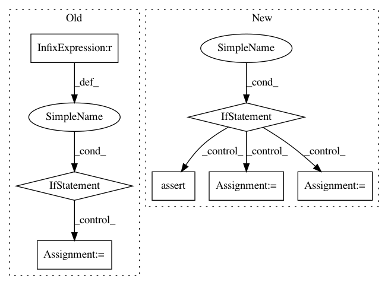

baa053496a78bbb89279847277e49242f721af0e,rllib/tests/run_regression_tests.py,,,#,27
Before Change
if __name__ == "__main__":
// Bazel regression test mode: Get path to look for yaml files from argv[2].
if sys.argv[1] == "BAZEL":
// Get the path to use.
rllib_dir = Path(__file__).parent.parent
print("rllib dir={}".format(rllib_dir))
yaml_files = rllib_dir.rglob(sys.argv[2] + "/*.yaml")
yaml_files = sorted(
map(lambda path: str(path.absolute()), yaml_files), reverse=True)
// Normal mode: Get yaml files to run from command line.
else:
yaml_files = sys.argv[1:]
print("Will run the following regression files:")
for yaml_file in yaml_files:
print("->", yaml_file)
After Change
rllib_dir = Path(__file__).parent.parent
print("rllib dir={}".format(rllib_dir))
if not os.path.isdir(os.path.join(rllib_dir, args.yaml_dir)):
raise ValueError("yaml-dir ({}) not found!".format(args.yaml_dir))
yaml_files = rllib_dir.rglob(args.yaml_dir + "/*.yaml")
yaml_files = sorted(
map(lambda path: str(path.absolute()), yaml_files), reverse=True)
print("Will run the following regression tests:")
for yaml_file in yaml_files:
print("->", yaml_file)
// Loop through all collected files.
for yaml_file in yaml_files:
experiments = yaml.load(open(yaml_file).read())
assert len(experiments) == 1,\
"Error, can only run a single experiment per yaml file!"
print("== Test config ==")
print(yaml.dump(experiments))
// Add torch option to exp configs.
for exp in experiments.values():
if args.torch:
exp["config"]["use_pytorch"] = True
// Try running each test 3 times and make sure it reaches the given
// reward.
passed = False
for i in range(3):
try:
ray.init(num_cpus=5)
In pattern: SUPERPATTERN
Frequency: 3
Non-data size: 7
Instances
Project Name: ray-project/ray
Commit Name: baa053496a78bbb89279847277e49242f721af0e
Time: 2020-05-26
Author: sven@anyscale.io
File Name: rllib/tests/run_regression_tests.py
Class Name:
Method Name:
Project Name: NifTK/NiftyNet
Commit Name: 5e8a0c73031db807c0e41ec8bc75f37d6e1b7d30
Time: 2017-05-07
Author: wenqi.li@ucl.ac.uk
File Name: layer/convolution.py
Class Name: ConvBNLayer
Method Name: layer_op
Project Name: keras-team/keras
Commit Name: ab75f215b6d65704e7272e0a411d9d082c029846
Time: 2015-08-13
Author: cheng.guo.work@gmail.com
File Name: keras/layers/convolutional.py
Class Name: Convolution2D
Method Name: get_output